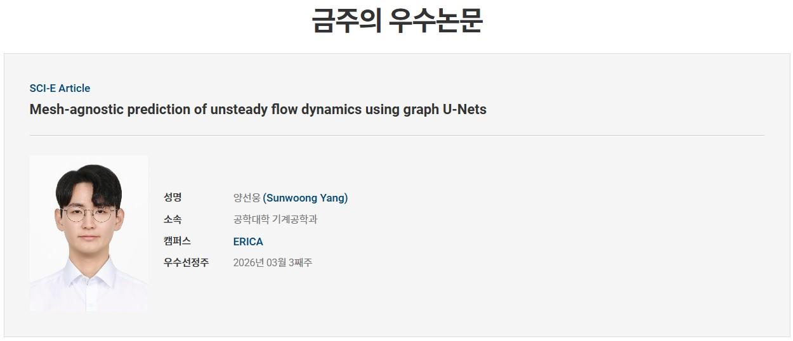

Mar. 20, 2026Selected for Hanyang Outstanding Researcher
IDEA LAB was recognized in Hanyang University's "한양의 우수연구자 (금주의 우수논문)" spotlight for the third week of March 2026.
The featured work, "Mesh-agnostic prediction of unsteady flow dynamics using graph U-Nets", was published in Expert Systems with Applications. The article demonstrates our graph-based U-Net architecture that predicts complex unsteady flow fields without relying on mesh-specific training data.
Read the full paper: https://linkinghub.elsevier.com/retrieve/pii/S0957417426007566.